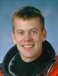

Lyndon B. Johnson Space Center
Houston, Texas 77058
|
National Aeronautics and Space Administration Lyndon B. Johnson Space Center Houston, Texas 77058 |
 |
Biographical Data |
||
WILLIAM C. MCCOOL (COMMANDER, USN)
NASA ASTRONAUT (DECEASED)
PERSONAL DATA: Born September 23, 1961 in San Diego, California. Died on February 1, 2003 over the southern United States when Space Shuttle Columbia and the crew perished during entry, 16 minutes prior to scheduled landing. He is survived by his wife and children. He enjoyed running, mountain biking, back country hiking/camping, swimming, playing guitar, chess.
EDUCATION: Graduated from Coronado High School, Lubbock, Texas, in 1979; received a bachelor of science degree in applied science from the US Naval Academy in 1983, a master of science degree in computer science from the University of Maryland in 1985, and a master of science degree in aeronautical engineering from the US Naval Postgraduate School in 1992.
ORGANIZATIONS: U.S. Naval Academy Alumni Association.
AWARDS: Posthumously awarded the Congressional Space Medal of Honor, the NASA Space Flight Medal, the NASA Distinguished Service Medal, and the Defense Distinguished Service Medal (DDSM).
SPECIAL HONORS: Eagle Scout; graduated second of 1,083 in the Class of 1983 at the US Naval Academy; presented Outstanding Student and Best DT-II Thesis awards as graduate of U.S. Naval Test Pilot School, Class 101; awarded Navy Commendation Medals (2), Navy Achievement Medals (2), and various other service awards.
EXPERIENCE: McCool completed flight training in August 1986 and was assigned to Tactical Electronic Warfare Squadron 129 at Whidbey Island, Washington, for initial EA-6B Prowler training. His first operational tour was with Tactical Electronic Warfare Squadron 133, where he made two deployments aboard USS CORAL SEA (CV-43) to the Mediterranean Sea, and received designation as a wing qualified landing signal officer (LSO). In November 1989, he was selected for the Naval Postgraduate School/Test Pilot School (TPS) Cooperative Education Program. After graduating from TPS in June 1992, he worked as TA-4J and EA-6B test pilot in Flight Systems Department of Strike Aircraft Test Directorate at Patuxent River, Maryland. He was responsible for the management and conduct of a wide variety of projects, ranging from airframe fatigue life studies to numerous avionics upgrades. His primary efforts, however, were dedicated to flight test of the Advanced Capability (ADVCAP) EA-6B. Following his Patuxent River tour, McCool returned to Whidbey Island, and was assigned to Tactical Electronic Warfare Squadron 132 aboard USS ENTERPRISE (CVN-65). He served as Administrative and Operations Officer with the squadron through their work-up cycle, receiving notice of NASA selection while embarked on ENTERPRISE for her final pre-deployment at-sea period.
McCool accumulated over 2,800 hours flight experience in 24 aircraft and over 400 carrier arrestments.
NASA EXPERIENCE: Selected by NASA in April 1996, McCool reported to the Johnson Space Center in August 1996. He completed two years of training and evaluation, and was qualified for flight assignment as a pilot. Initially assigned to the Computer Support Branch, McCool also served as Technical Assistant to the Director of Flight Crew Operations, and worked Shuttle cockpit upgrade issues for the Astronaut Office. He was the pilot on STS-107, logging 15 days, 22 hours and 20 minutes in space.
SPACE FLIGHT EXPERIENCE: STS-107 Columbia (Jan. 16 to Feb. 1, 2003). The 16-day flight was a dedicated science and research mission. Working 24 hours a day, in two alternating shifts, the crew successfully conducted approximately 80 experiments. The STS-107 mission ended abruptly on February 1, 2003 when Space Shuttle Columbia and the crew perished during entry, 16 minutes before scheduled landing.
MAY 2004